Seven temporal Game View screenshots per trick, sampled during a successful attempt with a forced validation roll. These are still frames from the Unity Editor probe, not 60fps recordings or a claim of production animation polish.
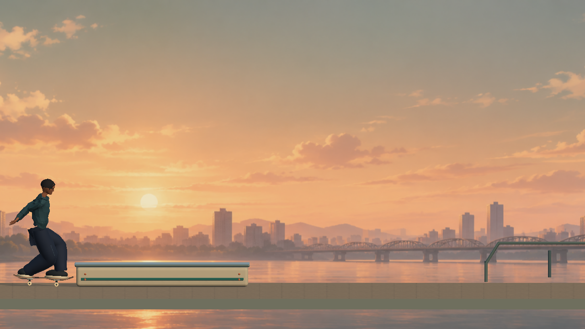
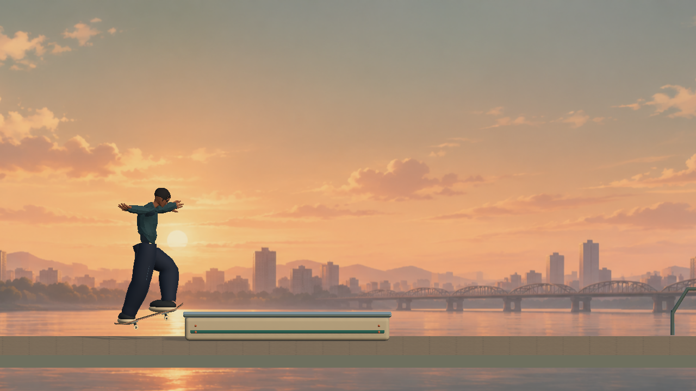
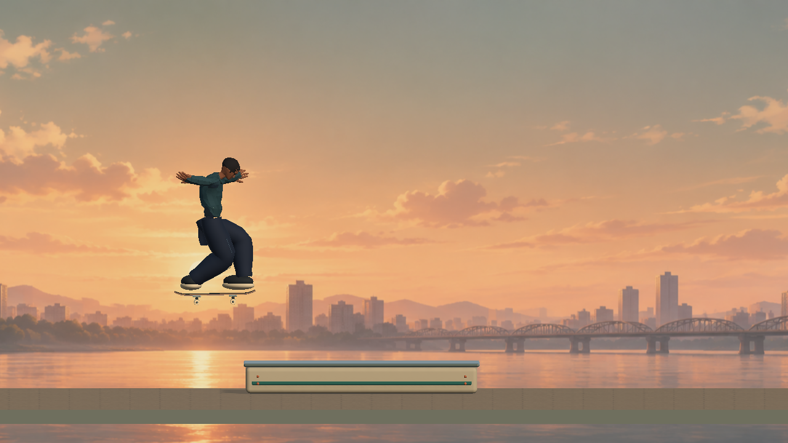
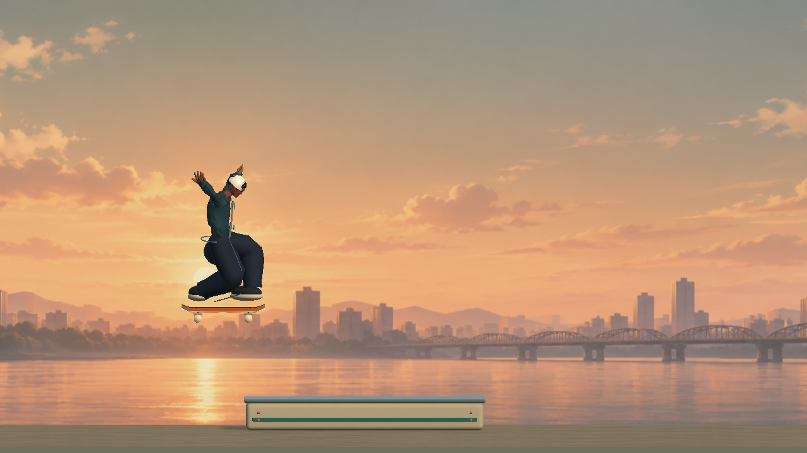
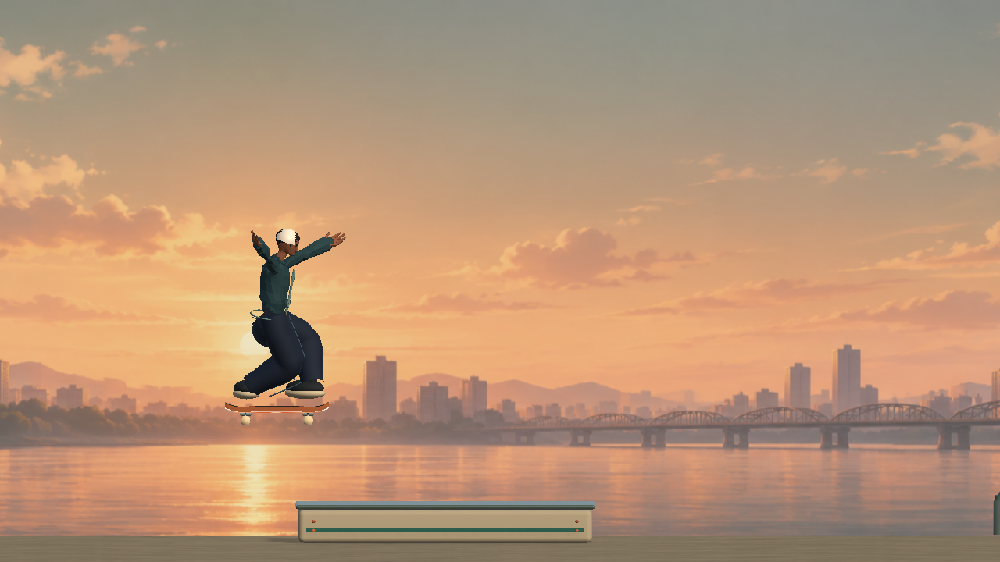
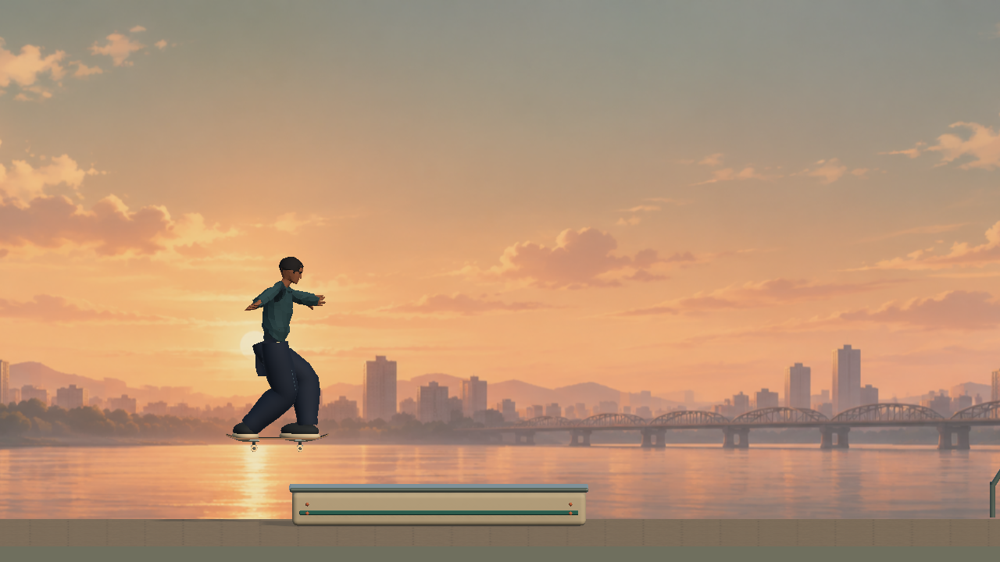
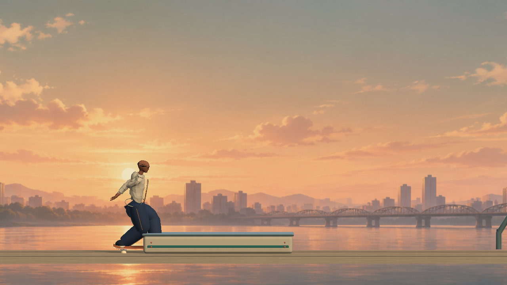
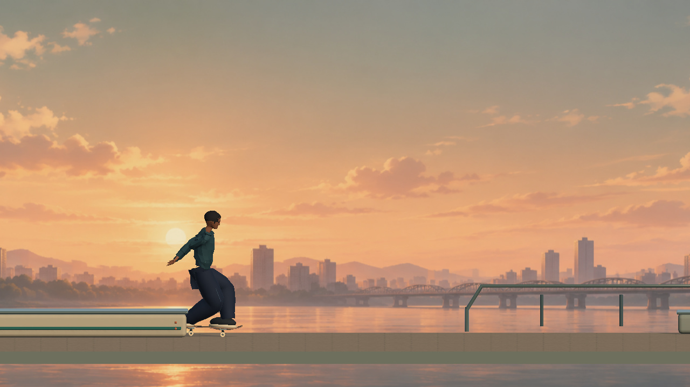
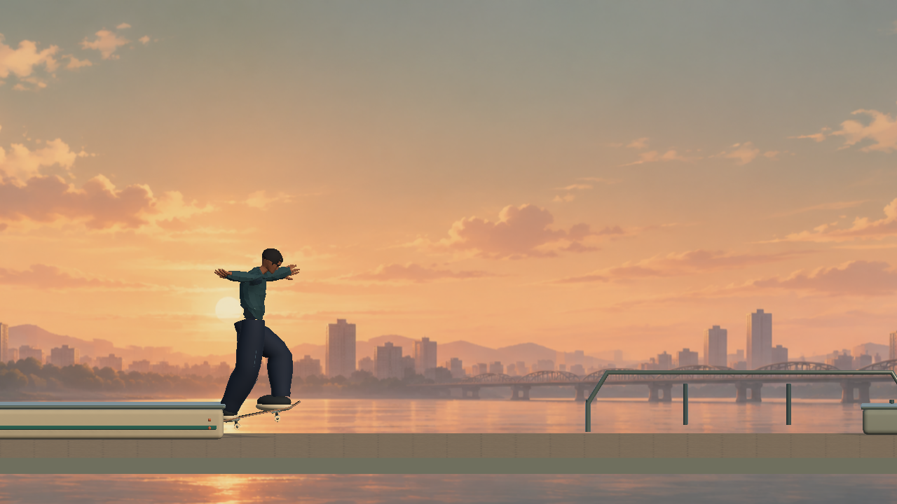
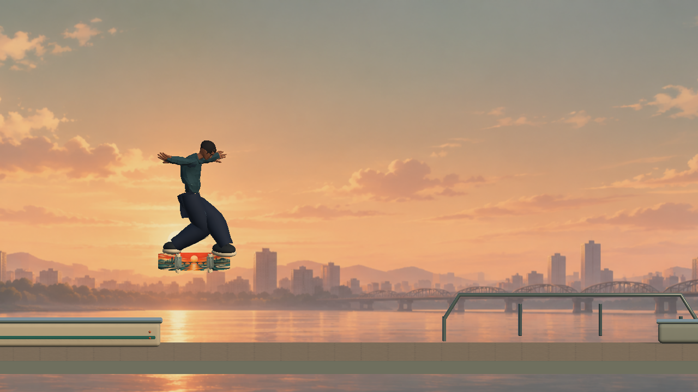
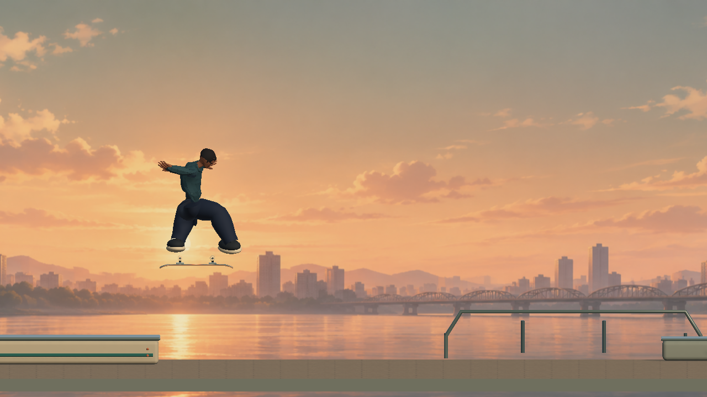
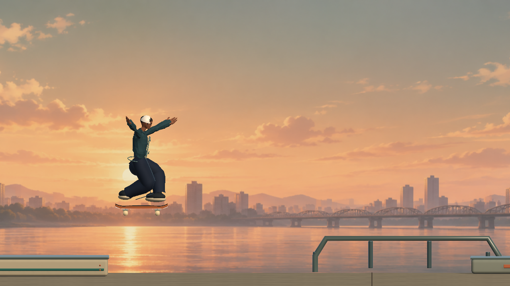
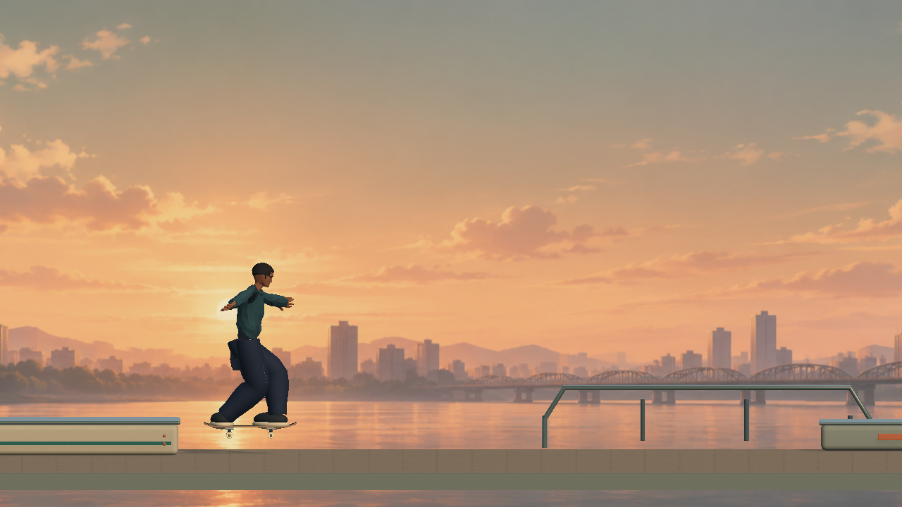
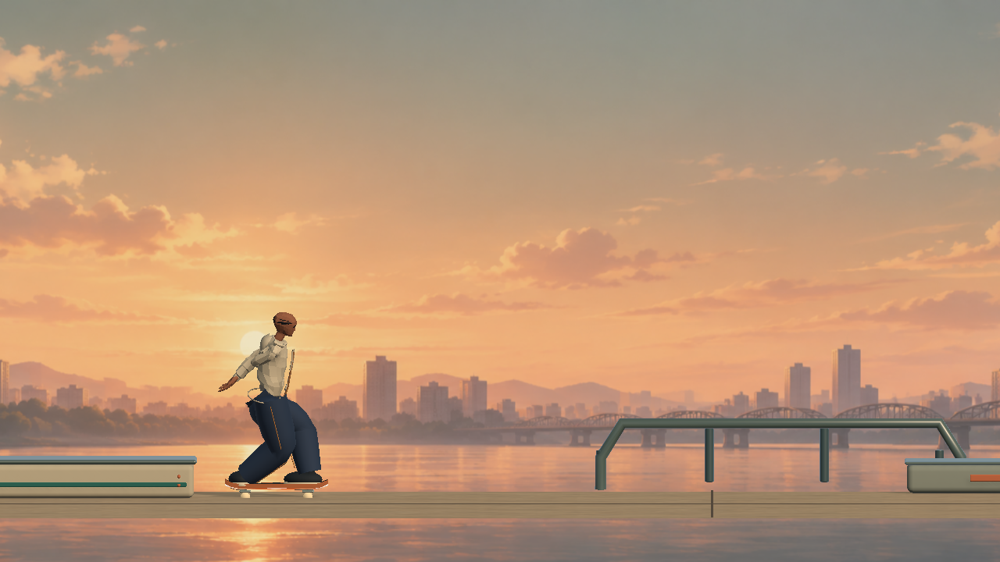
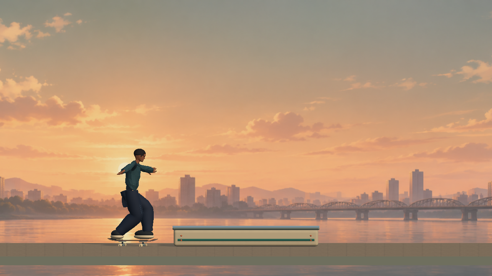
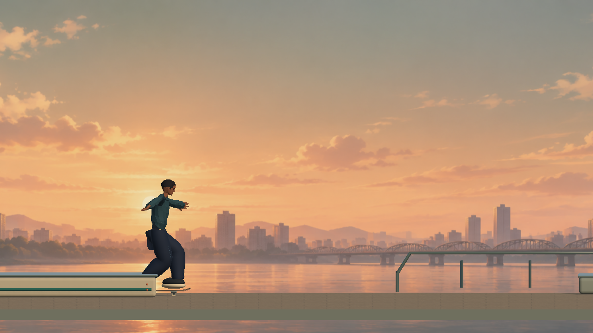